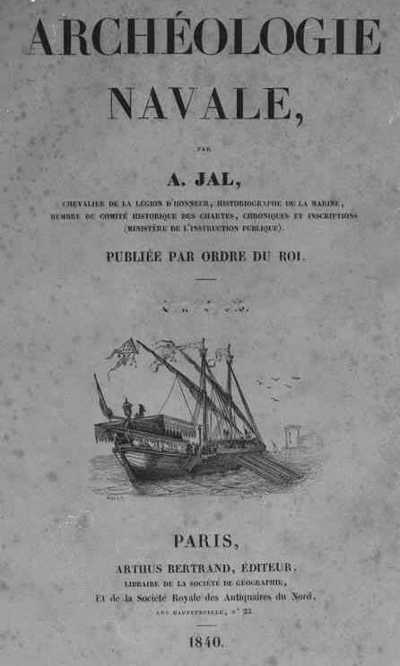
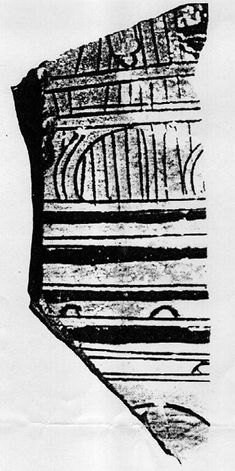
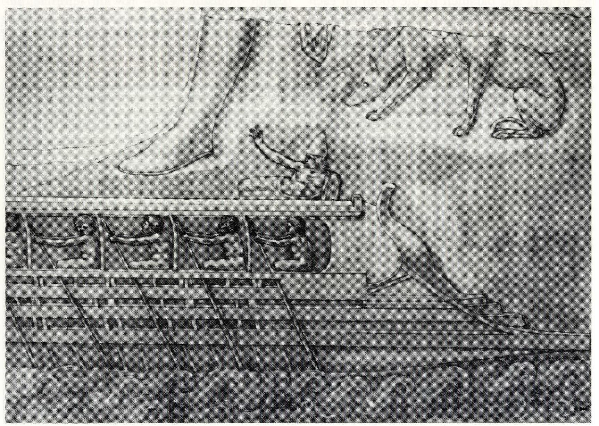
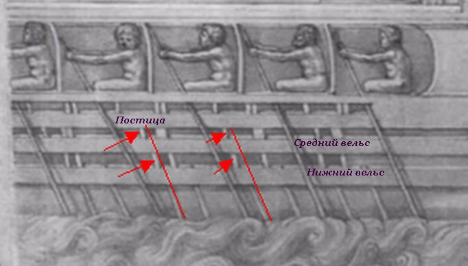
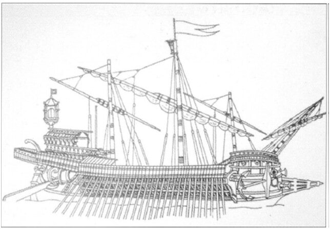

Тема размещения гребцов на античных галерах особенно отчетливо демонстрирует два принципиально различных подхода исследователей к оценке дошедших до нас документальных, в первую очередь изобразительных, свидетельств прошлого.
Одна группа принимает древние фрески, мозаики, скульптуры и барельефы так, как они предстают перед нами. Ученые из этой группы полагают, что эти произведения объективно отражают изображенную на них реальность.
Другие историки рассматривают подобные произведения как свободное творение свободного художника, вольного допускать отход от реальности для воплощения своего художественного замысла.
Ярким представителем второго направления был известный французский морской историк Огюст Жаль. В своем первом капитальном труде по морской археологии (Archéologie navale, 1840)

он очень выразительно обосновал эту позицию:
Sur toute représentation navale peinte ou sculptée, à quelque époque qu'elle puisse se reporter, il est nécessaire de faire un travail de critique analogue à celui qu’on applique à la phrase d'un historien ou d'un poёte qui décrit ou raconte, et peut avoir été mal informé du fait qu'il rappelle, ou se servir de termes impropres, faute d'intelligence ou de renseignements exacts. Il en est des documents, oeuvres de la main de l'artiste, comme de tout ouvrage ou l'imagination et le discernement ont une part; l'erreur y est toujours présumable jusqu'à preuve contraire.
Любое изображение корабля, будь оно исполнено кистью живописца или резцом скульптора, независимо от того, к какой эпохе оно относится, требует критического анализа, подобного тому, которому мы подвергаем каждую фразу историков или поэтов, описывающих события, о которых они были плохо информированы, либо использовавших в своей работе неподходящие термины ввиду своей некомпетентности или слабого знания предмета. Для каждого документа, рожденного в голове художника, каждого творения его рук , как и для любой работы, где присутствуют воображение и восприятие, всегда предполагается ошибка, если не доказано обратное.
Jal. Archéologie navale, 1840, I, p. 34.
Манифест да и только. По крайней мере он был воспринят как таковой в трудах морского историка Люсьена Баша (Lucien Basch). Алек Тилли, последовательный критик такого подхода, образно называет «манифест» “дорогой в Зазеркалье”:
Since it is impossible to prove that an ancient representation of a ship is not in error, M. Basch invites us into a looking-glass world where the more closely a hypothesis agrees with iconographic evidence, and the more iconographic evidence there is, the stronger the presumption that the hypothesis is wrong.
Поскольку невозможно доказать, что древнее изображение корабля не было ошибочным, г-н Баш приглашает нас в Зазеркалье, где чем ближе некая гипотеза согласуется с иконографическим свидетельством, и чем больше таких свидетельств существует, тем больше оснований считать, что эта гипотеза неверна.
Алек Тилли является «типичным представителем» (с) первой группы ученых из альтернативы, представленной в начале поста. Он полагает, что достоинством выдвинутой гипотезы является ее соответствие дошедшим до нас изображениям, даже если их точность не доказана.
Еще один патриарх науки о триерах Коутс отмечает, что предложенное Тилли размещение гребцов на триере (см. предыдущий пост) не учитывает требований, которые эта схема предъявляет к корпусу триеры. Если мы попытаемся рассчитать вероятную остойчивость, ходовые качества, прочность корпуса, считает Коутс, то убедимся что такие триеры не отвечают требованиям живучести корабля и не обладают необходимыми качествами при ходе на веслах. В то же время, по мнению Коутса, достоинством позиции Тилли является осознание того факта, что для успешной реконструкция корабля корпус триеры должен быть полностью интегрирован с системой гребли. Поэтому идеи Тилли не следует игнорировать.
Признавая, что схемы, предложенные Тилли соответствуют письменным и иконографическим свидетельствам античности, Коутс ставит в упрек своему оппоненту их несоответствие, в отличие от Олимпии, ‘generally accepted interpretations of ancient evidence’ - «общепринятой интерпретации свидетельств прошлого», хотя не уточняет, что это такое. В то же время, в работах, авторами которых являются сторонники «общепринятой модели», «улучшаются», или, если такое улучшение не получается, просто игнорируются факты, которые в эту модель не вписываются. Приведем примеры такого подхода.
Анализируя рисунок на фрагменте краснофигурной вазы, датируемой 450 г. до н.э., Коутс и Моррисон пишут:
The absence of tholes and stiles in the outrig¬ger as well as of the bracket supporting it, and the similar size of the zygian and thalamian oarports, are probably the result of rough drawing,
Отсутствие уключин и вертикальных брусьев на постице, а также поддерживающих ее кронштейнов, одинаковые размеры весельных портов зигитов и таламитов является, вероятно, результатом грубого исполнения рисунка.
Morrison, Coates, Rankov (2000). The Athenian Trireme, р.149
Следовательно, если данный артефакт не соответствует схеме, принятой на Олимпии – тем хуже для артефакта. Такой же подход проявляется и в оценке размера изображенных на фрагменте весельных портов: их несоответствие различным размерам и форме этих портов на Олимпии также объявляется ошибкой художника. То, что эти порты на фрагменте имеют форму полуокружности не вызывает у авторов проекта реконструкции афинской триеры никаких эмоций: ошибся художник, и все. Тилли же, со своей стороны, настаивает на том, что необходимо строго следовать тому изображению, которое мы видим на фрагменте. А мы видим три полукруглых весельных порта на двух уровнях.

Другой пример. Моррисон и компания утверждают, что известный рисунок из коллекции (в настоящее время находящейся в Британском Музее) итальянского ученого и мецената Кассиано даль Поццо (Cassiano dal Pozzo, 1588-1657), на котором мы видим гребцов, расположенных на двух уровнях, является изображением триеры с тремя ярусами гребцов. Просто он сделан невежественным художником.

Давайте посмотрим, как авторы подводят читателей к такому заключению.
The thalamian and thranite oars are shown correctly, but the zygian oars although appearing in their correct positions below the lower wale have not been recognised as continuing upwards across the lower and middle wales to the point where they disappear inside the ship under the outrigger, but the artist inserts, again incorrectly aligned, what in the original were the upper parts of the zygian oars between the wales and between the middle wale and the outrigger. The early seventeenth-century artist, ignorant of galleys with oars at three levels, very naturally has failed to understand what he is copying
Весла таламитов и транитов показаны верно. Однако весла зигитов, хотя и изображены правильно под нижним вельсом, не получают своего продолжения вверх и не пересекают нижний и средний вельсы до точки, в которой они скрываются в глубине судна под постицей. Вместо этого художник, опять же не соблюдая выравнивания частей, вставляет то, что в оригинале являлось верхними частями весел зигитов, между вельсами и между средним вельсом и постицей. Художник начала XVII века (работа из коллекции Даль Поццо относится к периоду между 1610 и 1635 гг. – g._g.), не имеющий понятия о галерах с веслами на трех уровнях, вполне естественно не смог понять то, что он копировал.
Morrison, Coates, Rankov (2000), The Athenian Trireme, p.141.
Приведем иллюстрацию к аргументам авторов на фрагменте рисунка из коллекции Даль Поццо:

Красными тонкими линиями мы отметили направления, которым, по мысли авторов, должны были следовать весла зигитов (среднего ряда гребцов), а красными стрелками – те элементы, которые, опять же по мнению авторов, являлись частью весел зигитов.
Возникает вопрос: если следовать подобной логике, то, например, галеас, изображенный Фернандо Бертелли (сейчас находится в музее морской истории Венеции; см. наш пост) тоже может рассматриваться как корабль с несколькими ярусами весел

Там тоже много наклонных элементов, которые при желании можно объединить в некое подобие весел, которые изображены так «невежественным» художником. Ясно, что доводы Моррисона и его сторонников в свете этого примера выглядят неубедительно.
Продолжим в следующий раз.